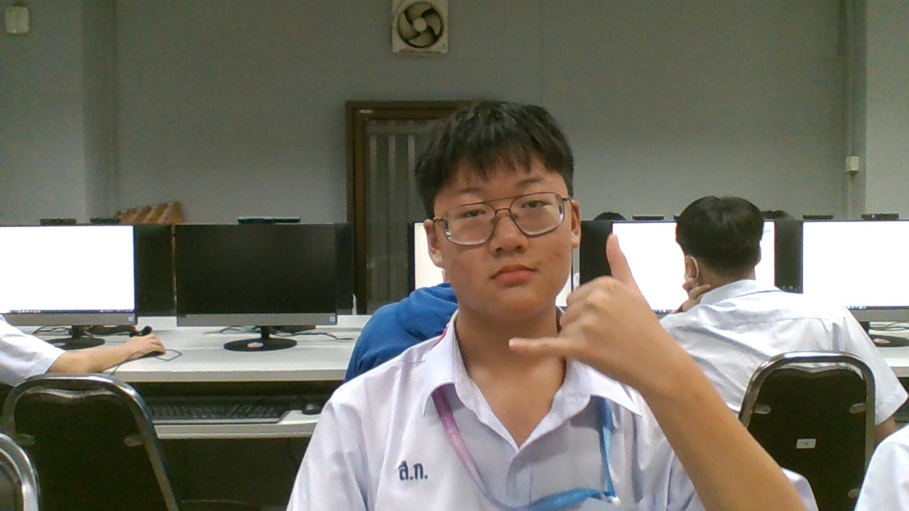

น.ส.สิริมณี อักขนิตย์ : ขอบคุณที่อาจารย์ซัพพอร์ตผมนะครับ
น.ส.สิริมณี อักขนิตย์ : ขอบคุณที่อาจารย์ซัพพอร์ตผมนะครับ
บทเพลงที่มอบให้ครู
 น.ส.กุนนที วงศ์ชัยอุดมโชค : ขอบคุณที่อาจารย์ให้เกด4ผมนะครับ
น.ส.กุนนที วงศ์ชัยอุดมโชค : ขอบคุณที่อาจารย์ให้เกด4ผมนะครับ
บทเพลงที่จะมอบให้ครู

น.ส.มาริษา วัฒนธรรม : ขอบคุณที่อาจารย์สั่งงานน้อยนะครับ
บทเพลงที่จะมอบให้ครู

นายธีรยุทธ มาณะจักร : ขอบคุณที่อาจารย์ให้คะเเนนผมเยอะนะครับ
บทเพลงที่จะมอบให้ครู

นายสิงหา สุวรรณศรี : ขอบคุณอาจารย์ที่ทำให้ผมมีความสุขในม.1นะครับ
บทเพลงที่จะให้ครู

ด.ช.พสธร ศรขำพันธ์ 207 16